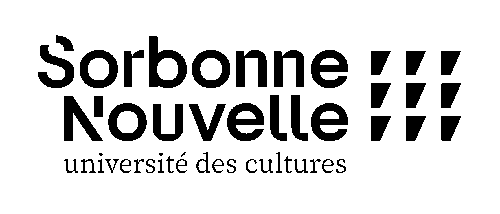

Elsa Damery
Licence 3 des Sciences du Langage

Mon CV :
| année universitaire | Statut |
|---|
| 2022-2023 | L3 SDL |
| 2021-2022 | L2 SDL |
| 2020-2021 | L1 SDL |
Cinq derniers livres que j'ai lu :
- Sapho, Renée Vivien
- Fragments, Sappho
- A Supernatural War, Owen Davies
- Le Banquet, Platon
- Les grecs croyaient-ils en leurs mythes ?, Paul Veyne